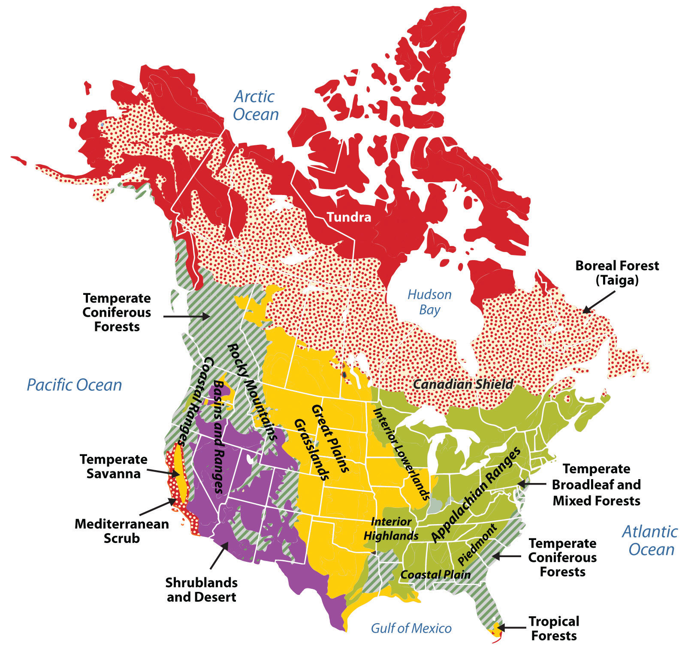
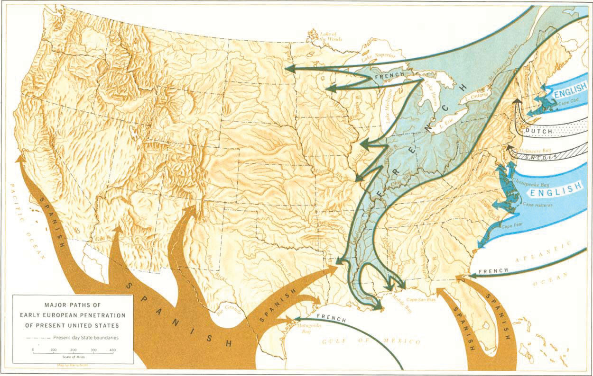

North America is divided into a number of physical regions with distinct landforms. The western part of the continent is marked by north-south mountain ranges in the Rocky Mountains and Pacific Mountains and Valleys physiographic provinces, with the Intermontane Basins and Plateaus in between. The eastern portion of North America is defined by the ancient Appalachian Highlands, a mountain range that is much less rugged than the Rockies but with no less influence on the history and development of the United States. The interior of the continent is characterized by plains—the Interior Lowlands and the Great Plains. To the north is the Canadian Shield, geologically the oldest part of North America, and a sparsely populated area with poor soils. At the southern and eastern edge of the continent is the Gulf-Atlantic Coastal Plain, a relatively flat zone that extends from New York to Texas.
Figure 4.2 Physical Regions of the United States and Canada
Source: Image courtesy of Cephas, http://commons.wikimedia.org/wiki/File:Major_habitat_type_CAN_USA.svg.
The climates of the United States and Canada include the frigid type E climate of the tundra of northern Canada and Alaska, the tropical type A climate of southern Florida and Hawaii, the type C climates of the humid eastern United States, the seasonal type D climates of the northern United States and most of Canada, and the arid type B climates of the Southwest and Great Plains. In general, there are two different climate patterns common in North America. The first pattern is that temperatures get warmer as you travel from north to south and get closer to the equator. The second pattern is that there is a decrease in precipitation as you move from east to west across the continent until you reach the Pacific Coast, where rainfall is abundant again.
The second climate pattern is created by the rain shadow effect of the western mountain ranges. As wet air masses move from the Pacific Ocean over the North American continent, they run into the Cascades and the Sierra Nevada. The Cascade ranges of Washington State and Oregon cut off moisture from falling on the leeward side of the mountains; thus eastern Washington State and eastern Oregon are semiarid. The western United States experiences a strong rain shadow effect. As the air rises to pass the mountains, water vapor condenses and is released as rain and snow. This means that west of these mountain ranges there is much more precipitation than to their east, resulting in arid and semiarid lands. The entire Great Plains of the western United States are affected by the rain shadow effect and have a semiarid type B climate.
Both the United States and Canada are products of European colonialism. North America was inhabited by many Native American groups before the Europeans arrived. Complex native societies, federations, and traditional local groups faced the European invasion. While the indigenous population of North America was robust at the time of the European encounter, within a few generations, these native peoples were overwhelmed by the diseases, weapons, and sheer numbers of the European arrivals.
The Europeans—mainly the Spanish, French, and British—left a strong imprint on their North American colonies. The oldest colonial city in North America is St. Augustine, Florida (1565), founded by Spain when Florida was a remote portion of the Spanish Americas. Spain also had outposts in what are now California, Arizona, New Mexico, and Texas. The forms of settlement characteristic of those areas were similar to the Spanish colonies of Central America. While Spain governed what is now the southern United States, France ruled Canada and much of the interior of the North American continent. The French first came to Canada in the late 1500s to engage in fishing in the North Atlantic and soon expanded their reach by creating a fur trade in the area surrounding the Great Lakes and throughout the Mississippi River system.
Although there were fewer settlers from France than from other European countries—especially in what became the United States—this French era left behind place names (Baton Rouge and Detroit), patterns of land use, and a French-speaking population in Canada. Despite the early influence of Spain and France in North America, most North Americans speak English as their native language as a result of Britain’s colonial dominance in the United States and Canada. The earliest permanent British colony, Jamestown, was founded in 1607 in what became Virginia. The British built up a successful empire in the New World. Their thirteen American colonies became populous, economically robust, and militarily strong enough to gain independence in 1776. Canada functions as an independent country but remains part of the British Commonwealth.
Figure 4.3 European Influence in the Colonial United States
Source: Map courtesy of the National Park Service, http://www.nps.gov/history/history/online_books/explorers/images/map1.jpg.
The US population surpassed the three hundred million mark in 2006. Canada now has over thirty-four million people. The US population is growing by about 2.5 million people each year. A little less than half the growth can be attributed to immigration and the rest to birth rates. The pace of growth is slower than the world average but more rapid than many other industrialized countries such as those in Europe.
The population is not uniformly spread over North America, nor are the population growth rates the same in all locations. Most Canadians live in near proximity to the US border. The North American population tends to be clustered in cities, with about 80 percent of US citizens residing in urban/suburban areas. Additionally, over time, the population has been moving southward and westward. US states experiencing the greatest rates of population growth include those located on the southern portion of the eastern seaboard, as well as Texas, Nevada, Utah, California, Oregon, and Washington. Three states—California, Texas, and Florida—accounted for about a third of the entire US population growth since 1990. Still, the Northeast is the most densely populated area of the country thanks, in large part, to the megalopolis that forms the corridor and encompasses the cities from Washington, DC, north to Boston. The largest concentration of Canadians lives in the most southern-reaching province of Ontario. For this reason, the province of Ontario is often referred to as South Canada.
In general, the population of minorities is growing most rapidly. Some of the fastest-growing populations in the United States are Hispanics. Another interesting factor in population growth is the increase in life expectancy. As more people live longer, the growth of the segment of the population aged sixty-five has doubled in the last fifty years. However, it appears that the growth of this population segment is slowing. Of this group, the greatest increase was seen in people aged eighty-five years and older.
The American population tends to be on the move. The US Census Bureau data show that the average American moves once every seven years; these data further predict that about forty million people move each year.“Geographical Mobility between 2004 and 2005,” US Census Bureau, http://www.census.gov/population/www/pop-profile/files/dynamic/Mobility.pdf. Data also indicate Americans will move to a metropolitan area. Urbanization has been a trend since about 1950. Until that time, most Americans lived in small towns or more rural settings. The population density of the cities, and especially the suburban areas, has grown steadily since that time, bringing about a rural-to-urban population shift. Now a significant majority of people in North America live in suburban areas.
Urbanization has brought some challenges. The layout of these areas often makes owning a car a necessity; thus traffic congestion is a major problem in many suburban and urban areas. Other issues that have arisen are overcrowded schools, racial tensions, and a widening economic gap between the wealthy and impoverished. As people move to the cities, housing and other resources might not be able to meet demand, forcing prices upward. The gap between the cost of living in an urban area and the population’s ability to pay has contributed to poverty and homelessness. Environmental issues also abound, including how to reduce or eliminate smog, manage waste, and ensure adequate clean water supplies.
Identify the following key places on a map: